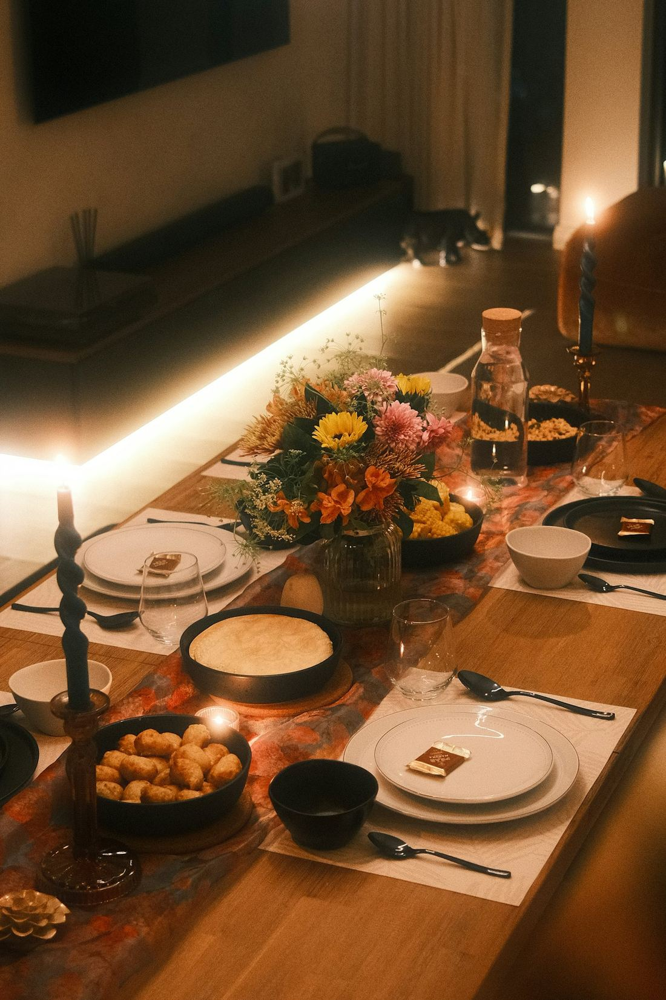
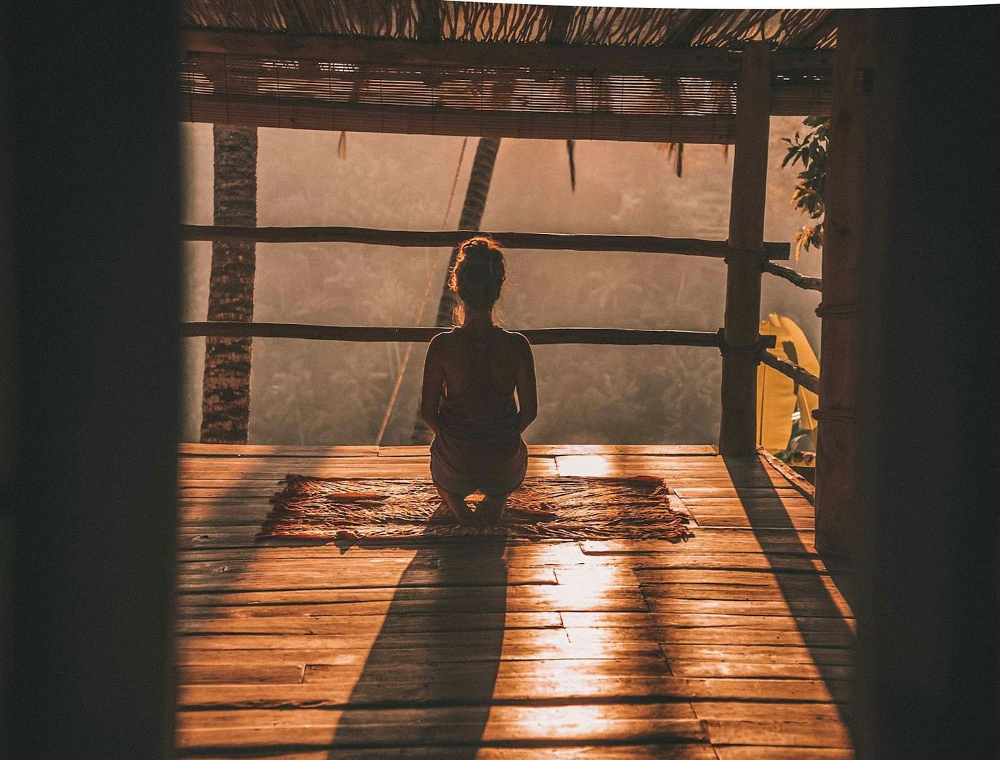
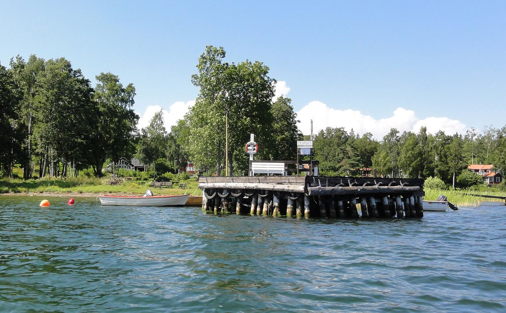

Höstretreat · 23–25 oktober 2026
En helg för kropp & sinne på Yxlan
Mys, gemenskap, god mat och avslappning – och framför allt en helg där vi utforskar kvinnokroppen och menscykeln på ett djupare plan.
Om 22 dagar

Det här väntar dig
Två dagar att landa i dig själv
Vi välkomnar dig på fredagskvällen med te, en varm middag och en öppningscirkel där vi landar tillsammans. Sedan har du en hel helg framför dig där det enda du behöver göra är att vara närvarande.
Vi dyker djupare in i oss själva genom en fin blandning av rörelse, meditationer, womb work, skrivande och reflektion. Vi lyssnar, delar och skapar. Däremellan finns det gott om tid att vila, gå en promenad längs klipporna eller bara sitta med en kopp te och titta ut över vattnet.
Du får med dig verktyg och kunskap för att förstå och trivas i din cykliska kropp – och förhoppningsvis en känsla av att du inte är ensam.
”Däremellan tar vi hand om dig.”


Rörelse, stillhet, god mat och långa samtal.
Helgen i stora drag
Schema
Fredag 23 oktober
- Ankomst och teVi visar dig runt och du hinner landa.
- MiddagEn varm, hemlagad middag tillsammans.
- ÖppningscirkelVi lär känna varandra och sätter intentioner för helgen.
Lördag 24 oktober
- MorgonrörelseMjukt och kännande, för att vakna in i kroppen.
- Frukost
- Womb workVi utforskar kvinnokroppen och menscykeln på djupet.
- Lunch
- Skriva och reflekteraSkrivövningar kopplade till cykelns faser.
- Fri tid och vilaPromenad, tupplur eller en bok vid fönstret.
- Middag
- KvällsmeditationVi avslutar dagen i stillhet.
Söndag 25 oktober
- Mjuk morgonSov ut, eller följ med på en stilla morgonstund.
- Frukost
- SkapaLekfullt skapande med händerna.
- AvslutningscirkelVi delar det vi tar med oss hem.
- Lunch
- HemfärdMed lite mer kärlek till din kropp, hoppas vi.
Det här ingår
- Boende fredag till söndag
- All mat, från fredagsmiddag till söndagslunch
- Alla pass: rörelse, meditation, womb work, skrivande och skapande
- Material, te och fika
- Mycket omtanke
Ta med dig
- Bekväma kläder att röra dig i
- Varma lager och tjocka sockor
- En anteckningsbok och penna
- Vattenflaska
- Det du behöver för att sova gott



Om platsen
Yxlan, i skärgårdens stillhet
Yxlan är en ö i norra Stockholms skärgård, med granitklippor, skog och vatten åt alla håll. Här ligger Siris landställe – ett varmt hem där vi samlas under helgen, långt från vardagens brus.
- Med färja eller båtBilfärja från Furusund, eller Waxholmsbolagets båtar som lägger till vid flera bryggor på ön.
- Med bussDet går buss från Norrtälje. Vi hjälper dig att hitta bästa resvägen.
- SamåkningVi kopplar gärna ihop dig med andra deltagare.
Exakt vägbeskrivning och adress skickar vi efter anmälan.
Höstretreat på Yxlan
Vill du vara med i oktober?
Anmälan är inte bindande – vi hör av oss med all information.